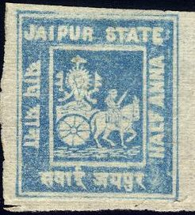
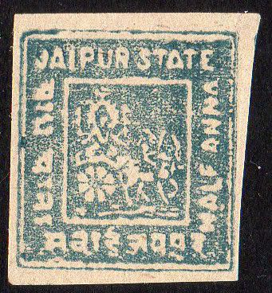
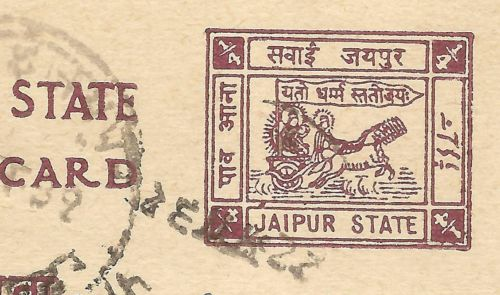
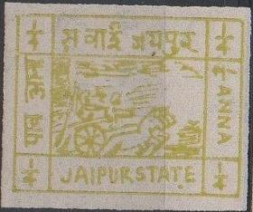

{kind=link}


Note: on my website many of the
pictures can not be seen! They are of course present in the
catalogue;
contact me if you want to purchase it.
1/2 a blue 1 a red 2 a green
These stamps are badly perforated. The 1/2 a exists imperforate (in blue and black?: RR).
Value of the stamps |
|||
vc = very common c = common * = not so common ** = uncommon |
*** = very uncommon R = rare RR = very rare RRR = extremely rare |
||
| Value | Unused | Used | Remarks |
| 1/2 a | *** | *** | There are two main types of the 1/2 a; large or small
inscription at sides and bottom. The small inscription has 36 subtypes (in two plates) and the large inscription has 24 subtypes. |
| 1 a | *** | *** | There are 12 subtypes of this value. |
| 2 a | *** | *** | There are 12 subtypes of this value. |
I presume this is a typical cancel from Jaipur.
Sheets of stamps:
Forgeries:
Two stamps in violet colour, forgeries? Reduced sizes

Another forgery from the same source?
Forgeries exist, examples:
(Forgeries)
By the way, I'm not 100 % sure if all the above stamps are genuine. For more information on forgeries of Jaipur check this website: http://www.princelystates.com/CurrentIssue/ff-04-01c.shtml.
1/4 a green 1/2 a blue 1 a red 2 a green 4 a brown 8 a lilac 1 R yellow
All values were issued engraved in 1904. In 1913 some values were issued typographed (all values except 8 a and 1 R).
Value of the stamps |
|||
vc = very common c = common * = not so common ** = uncommon |
*** = very uncommon R = rare RR = very rare RRR = extremely rare |
||
| Value | Unused | Used | Remarks |
| 1/4 a | c | c | |
| 1/2 a | c | * | |
| 1 a | c | * | |
| 2 a | * | * | |
| 4 a | ** | ** | |
| 8 a | ** | ** | |
| 1 R | *** | *** | |
Surcharged with Indian text (1927) 3 a (in Indian, red) on 8 a violet 3 a (in Indian, red) on 1 R yellow
Value of the stamps |
|||
vc = very common c = common * = not so common ** = uncommon |
*** = very uncommon R = rare RR = very rare RRR = extremely rare |
||
| Value | Unused | Used | Remarks |
| 3 a on 8 a | ** | ** | |
| 3 a on 1 R | ** | ** | |
Forgeries exist. For more information check this website: http://www.princelystates.com/CurrentIssue/ff-04-01c.shtml.
I've seen a 1 a red stamp with "REVENUE" overprint:
In 1929 some of these stamps were overprinted with "SERVICE":
A postcard in a similar design:

(Reduced size)
1/4 a green 1/2 a blue 1 a red 2 a green
Value of the stamps |
|||
vc = very common c = common * = not so common ** = uncommon |
*** = very uncommon R = rare RR = very rare RRR = extremely rare |
||
| Value | Unused | Used | Remarks |
| 1/4 a | * | * | |
| 1/2 a | * | * | |
| 1 a | * | * | |
| 2 a | *** | *** | |
These stamps were printed in the Jaipur jail? There are six types of each stamp (or even more in a setting A and B?).
Sheetlet of six 2 a stamps. Note the extension of the left
frameline in the third stamp and the
Note that the bottom left stamp in this 1/2 a sheetlet has '1/3'
in the bottom left corner instead of '1/2'. The types appear to
be similar to the above 2 a stamps.
This sheetlet of 1/2 a stamps has no dot behind 'STATE' in the
lower left stamp. All the types are different from the above
shown 1/2 a sheetlet?

Modern forgery.
Instead of "SERVICE" these stamps also exist
overprinted with red Indian text and "RAJAHSTAN"
(1950). I've also seen them with overprint "REVENUE" or
"COURT FEE" to be used as fiscal stamps.
Postcard, example:
(Reduced size)
Stamps - Timbres-Poste - Briefmarken
{kind=link}
{kind=link}
{kind=link}